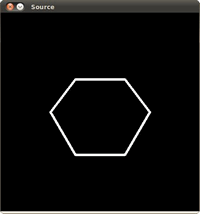
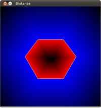

Point Polygon Test
Goal
In this tutorial you will learn how to:
- Use the OpenCV function cv::pointPolygonTest
Theory
Code
This tutorial code’s is shown lines below. You can also download it from here
#include "opencv2/highgui.hpp" #include "opencv2/imgproc.hpp" #include <iostream> using namespace cv; using namespace std; int main( void ) { const int r = 100; Mat src = Mat::zeros( Size( 4*r, 4*r ), CV_8UC1 ); vector<Point2f> vert(6); vert[0] = Point( 3*r/2, static_cast<int>(1.34*r) ); vert[1] = Point( 1*r, 2*r ); vert[2] = Point( 3*r/2, static_cast<int>(2.866*r) ); vert[3] = Point( 5*r/2, static_cast<int>(2.866*r) ); vert[4] = Point( 3*r, 2*r ); vert[5] = Point( 5*r/2, static_cast<int>(1.34*r) ); for( int j = 0; j < 6; j++ ) { line( src, vert[j], vert[(j+1)%6], Scalar( 255 ), 3, 8 ); } vector<vector<Point> > contours; vector<Vec4i> hierarchy; Mat src_copy = src.clone(); findContours( src_copy, contours, hierarchy, RETR_TREE, CHAIN_APPROX_SIMPLE); Mat raw_dist( src.size(), CV_32FC1 ); for( int j = 0; j < src.rows; j++ ) { for( int i = 0; i < src.cols; i++ ) { raw_dist.at<float>(j,i) = (float)pointPolygonTest( contours[0], Point2f((float)i,(float)j), true ); } } double minVal; double maxVal; minMaxLoc( raw_dist, &minVal, &maxVal, 0, 0, Mat() ); minVal = abs(minVal); maxVal = abs(maxVal); Mat drawing = Mat::zeros( src.size(), CV_8UC3 ); for( int j = 0; j < src.rows; j++ ) { for( int i = 0; i < src.cols; i++ ) { if( raw_dist.at<float>(j,i) < 0 ) { drawing.at<Vec3b>(j,i)[0] = (uchar)(255 - abs(raw_dist.at<float>(j,i))*255/minVal); } else if( raw_dist.at<float>(j,i) > 0 ) { drawing.at<Vec3b>(j,i)[2] = (uchar)(255 - raw_dist.at<float>(j,i)*255/maxVal); } else { drawing.at<Vec3b>(j,i)[0] = 255; drawing.at<Vec3b>(j,i)[1] = 255; drawing.at<Vec3b>(j,i)[2] = 255; } } } const char* source_window = "Source"; namedWindow( source_window, WINDOW_AUTOSIZE ); imshow( source_window, src ); namedWindow( "Distance", WINDOW_AUTOSIZE ); imshow( "Distance", drawing ); waitKey(0); return(0); }
Explanation
Result
Here it is:
 